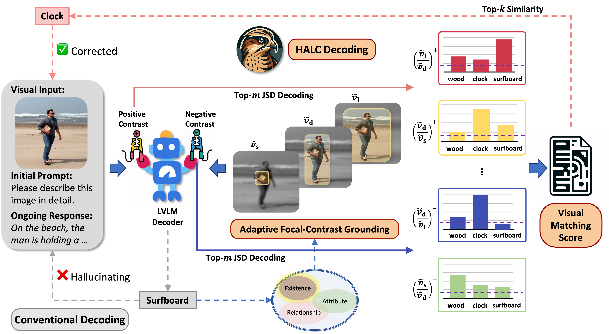
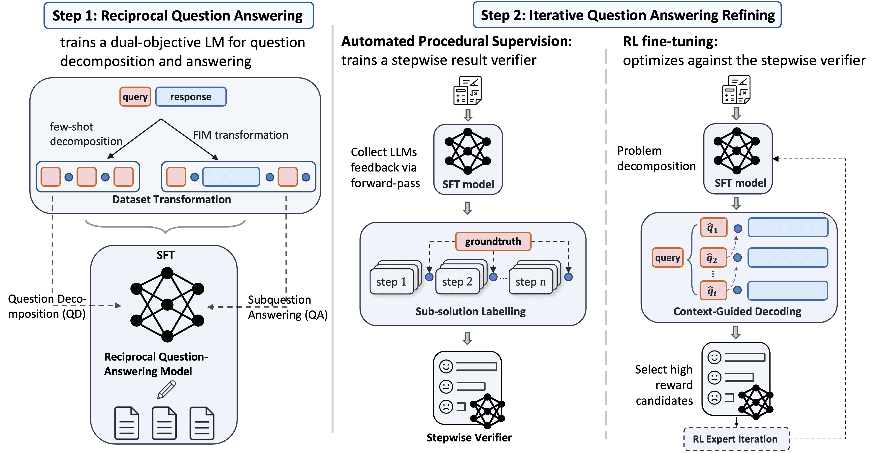

| CV |
Email |
Google Scholar |
|
I am an incoming Ph.D. student in the Secure Learning Lab at UChicago CS advised by Prof. Bo Li. Previously, I received my Master degree in Electrical and Computer Engineering at Purdue University advised by Prof. Su Lu. Before that, I obtained my Bachelor degree in Automation at Shanghai Jiao Tong University, advised by Prof. Yue Gao and Prof. Liang Gong. My current research interests center on trustworthy deployment and safe interactions with large foundation models (e.g. LLMs, LVLMs, DMs) from both a theoretical and empirical perspective. Specifically, I’m interested in enhancing their trustworthiness via robustness certificates for content moderation techniques (e.g. hallucination mitigation, human-values alignment, jailbreaks and defense, training data privacy) through incorporating external knowledge sources and LLMs’ reasoning capabilities. [Publications] Email: zhaorun [AT] uchicago.edu |
|
|
|  |
pdf |
abstract |
bibtex |
arXiv
While large vision-language models (LVLMs) have demonstrated impressive capabilities in interpreting multi-modal contexts, they invariably suffer from object hallucinations (OH). We introduce HALC, a novel decoding algorithm designed to mitigate OH in LVLMs. HALC leverages distinct fine-grained optimal visual information in vision-language tasks and operates on both local and global contexts simultaneously. Specifically, HALC integrates a robust auto-focal grounding mechanism (locally) to correct hallucinated tokens on the fly, and a specialized beam search algorithm (globally) to significantly reduce OH while preserving text generation quality. Additionally, HALC can be integrated into any LVLMs as a plug-and-play module without extra training. Extensive experimental studies demonstrate HALC’s effectiveness in reducing OH, outperforming state-of-the-arts across four benchmarks. Code is released here.
@article{chen2024halc,
title={HALC: Object Hallucination Reduction via Adaptive Focal-Contrast Decoding},
author={Chen, Zhaorun and Zhao, Zhuokai and Luo, Hongyin and Yao, Huaxiu and Li, Bo and Zhou, Jiawei},
journal={arXiv preprint arXiv:2403.00425},
year={2024}
}
|
|  |
pdf |
abstract |
bibtex |
arXiv
Recent advancements in large language models (LLMs) have shown promise in multi-step reasoning tasks, yet their reliance on extensive manual labeling to provide procedural feedback remains a significant impediment. To address this challenge, in this paper, we propose a novel self-supervised framework AutoPRM that efficiently enhances the fine-tuning of LLMs for intricate reasoning challenges. Specifically, AutoPRM first decomposes complex problems into more manageable subquestions with a controllable granularity switch, then sequentially apply reinforcement learning to iteratively improve the subquestion solver. Additionally, we propose context-guided-decoding to avoid reward tampering and guide the subquestion solver towards the solution of the holistic problem. Extensive experiments show that AutoPRM significantly improves performance on mathematical and commonsense reasoning tasks over SOTA. More encouragingly, AutoPRM can be easily integrated with other orthogonal reasoning pipelines.
@article{chen2024autoprm,
title={AutoPRM: Automating Procedural Supervision for Multi-Step Reasoning via Controllable Question Decomposition},
author={Chen, Zhaorun and Zhao, Zhuokai and Zhu, Zhihong and Zhang, Ruiqi and Li, Xiang and Raj, Bhiksha and Yao, Huaxiu},
journal={arXiv preprint arXiv:2402.11452},
year={2024}
}
|
|
pdf |
abstract |
bibtex |
arXiv
An attached arm can significantly increase the applicability of legged robots to several mobile manipulation tasks that are not possible for the wheeled or tracked counterparts. The standard control pipeline for such legged manipulators is to decouple the controller into that of manipulation and locomotion. However, this is ineffective and requires immense engineering to support coordination between the arm and legs, error can propagate across modules causing non-smooth unnatural motions. It is also biological implausible where there is evidence for strong motor synergies across limbs. In this work, we propose to learn a unified policy for whole-body control of a legged manipulator using reinforcement learning. We propose Regularized Online Adaptation to bridge the Sim2Real gap for high-DoF control, and Advantage Mixing exploiting the causal dependency in the action space to overcome local minima during training the whole-body system. We also present a simple design for a low-cost legged manipulator, and find that our unified policy can demonstrate dynamic and agile behaviors across several task setups.
@article{chen2023progressive,
title={Progressive Adaptive Chance-Constrained Safeguards for Reinforcement Learning},
author={Chen, Zhaorun and Chen, Binhao and He, Tairan and Gong, Liang and Liu, Chengliang},
journal={arXiv preprint arXiv:2310.03379},
year={2023}
}
|
|
International Conference on Learning Representations (ICLR), 2024
Association for Computational Linguistics Rolling Review (ACL), 2024 |
|
|